島が、大きく育つ。
東西に広い土地。花壇・水辺・木かげ・家に大きな変化。記録は成熟と拡張の節目に絞りました。
実装を固定したローカルの実画面。390×844 / 768×1024。音off相当の視覚確認・tablet reduced motion。作者操作の記録で、子どもの観察ではありません。検証記録 · 画面の出所と版
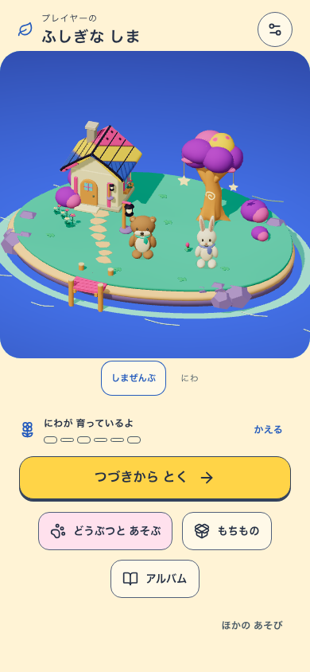
はじめの島 4つの場所が育った島
4つの場所が育った島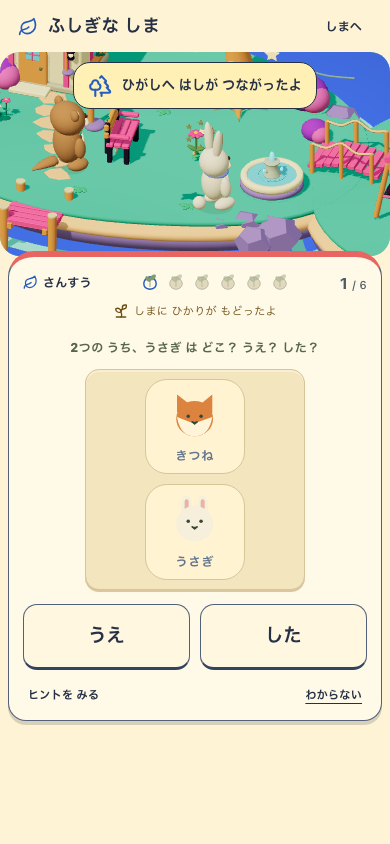
東の土地が広がった節目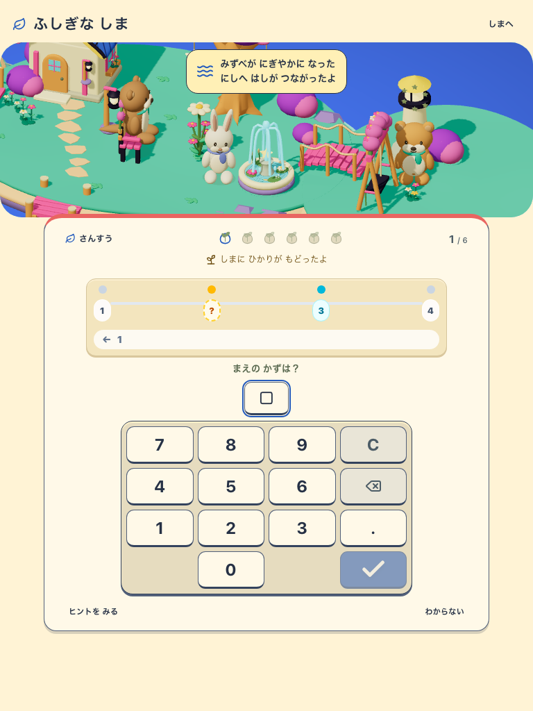
水辺の成熟と西への拡張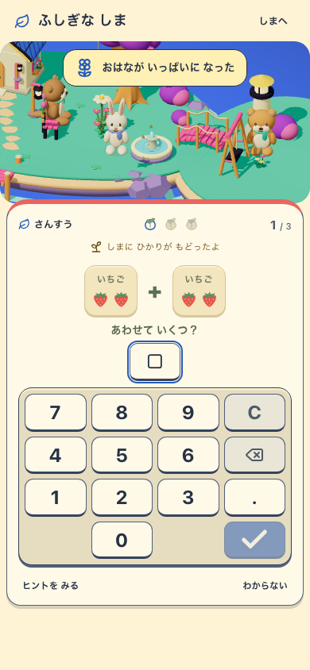
花壇の成熟・次問は入力可能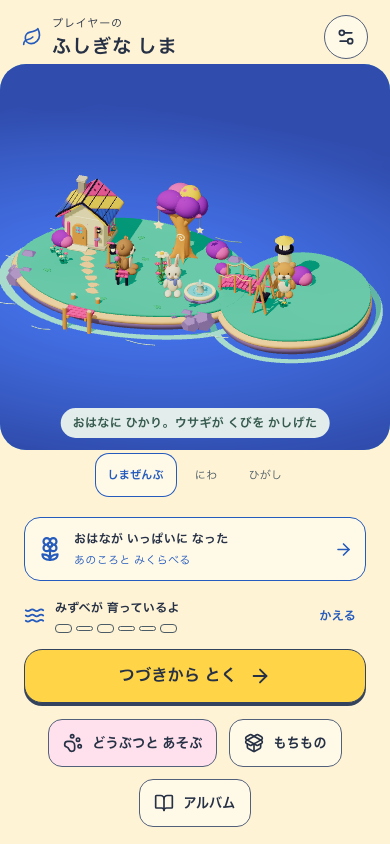
帰島後の比較への入口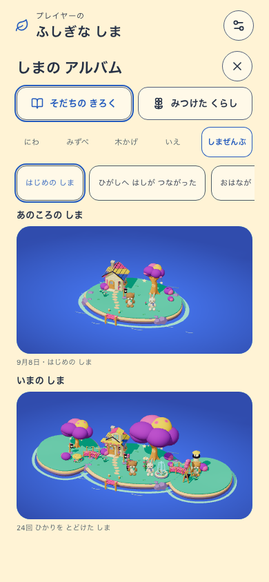
島の広がりを同じ倍率で比較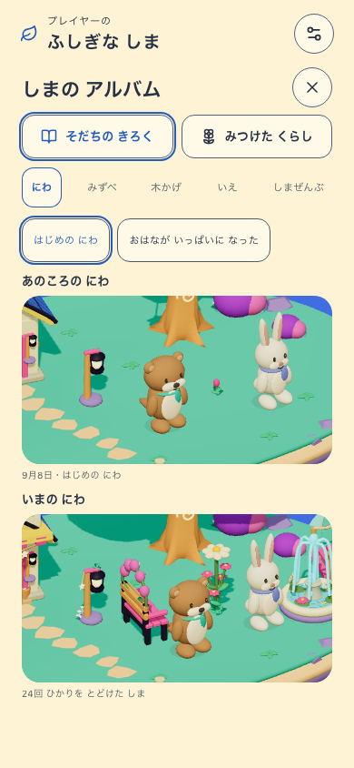
庭の比較と2件の履歴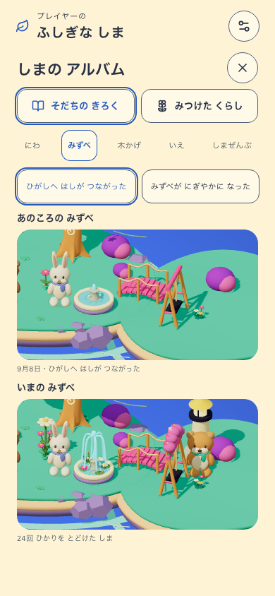
水辺の比較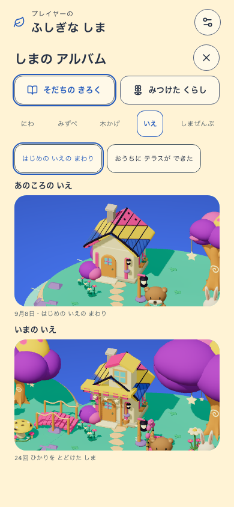
家の比較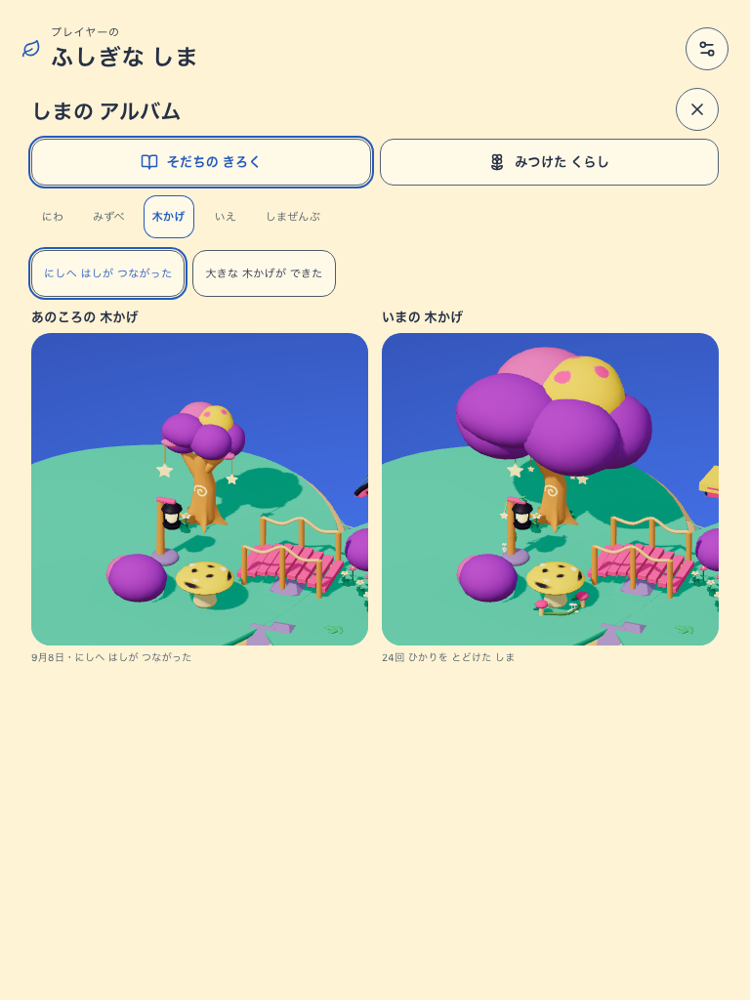
木かげの比較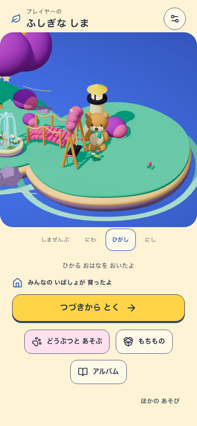
新しい外側の地面に配置前回の候補との比較
 前回 v3 の成熟した島今回 v4 の成熟した島Build 9300ea0-milestones-cc26726dd0e3 / delivery mystic-island-v1 / visual mystic-island-living-v4
前回 v3 の成熟した島今回 v4 の成熟した島Build 9300ea0-milestones-cc26726dd0e3 / delivery mystic-island-v1 / visual mystic-island-living-v4